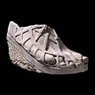

|
|
NewsEighteenth century to eBay

Suitable for families with children 7+
Colossal marble foot Roman, 1st-2nd century AD. Found near Naples, Italy
|
For free resources click here.
Africa in The British Museum Activities for use in the galleries KS2, £5.00
Ancient Greece Background information and KS2 gallery activities KS2, £2.00
Archaeology Guides Introduces teachers of Art and Design to the arts of Japan. Different media are explored within their historical and cultural context. This guide may be used in conjunction with a visit to the Japanese Galleries or in the classroom. Kazari guide included. KS3 - A level, £3.00
Aztecs Includes information on the bronze plaques from the Royal Palace, gallery activities and a scheme of work. KS2, £3.00
Celts Information for teachers and gallery guide. KS3 £1.00
Classical Civilisation guides
Enlightenment Pack
Family trails
Islamic Civilisations A pack including information about major Mexican civilisations KS2 / 3, £3.00
Mughals: Jewelled Arts Native North America
Nebamun Goes Hunting Versatile classroom resource containing 30 A4 laminated colour photos with teacher notes. The Human Face, KS3 - A Level. Native North America, KS3/4 £7.50 each or £10.00 for both
Prehistory: Objects of Power Guide Gallery activities and information KS2 / 3, £5.00
What is African Art? Exploring dragons in The British Museum collections. For use in the classroom in conjunction with the online Compass tour, or to accompany a museum visit. Suitable for China as a topic, literacy, history, ICT and art. KS2 £3.00 Resources available free with a 10" x 15" stamped sae (please see each pack for postage rates) Adult trails covering Money, Women in Asia, Food and Drink in China, Christianity in Roman Britain, Islamic Art and Human Remains. Free from the Information Desk.
Africa: mask and masquerade Includes background information and KS2 worksheets. 54p postage
Gilded Dragons For teachers of Art and Design, to accompany the special exhibition. Historical and cultural themes of the exhibition are outlined and suggested activities included. KS3 - A level, 19p postage
Medieval Realms
Museum Activities
Native North America From the British Museum exhibition. Contains background information. KS3. 54p postage
|
 Tiered lacquer picnic box. From Japan, Edo period, late 17th century AD
|
|||
|
home |
visit |
what's on |
join |
shop |
learning |
COMPASS |
world cultures |
sitemap |
contact us |
copyright
© The British Museum, 2002 |
|||||